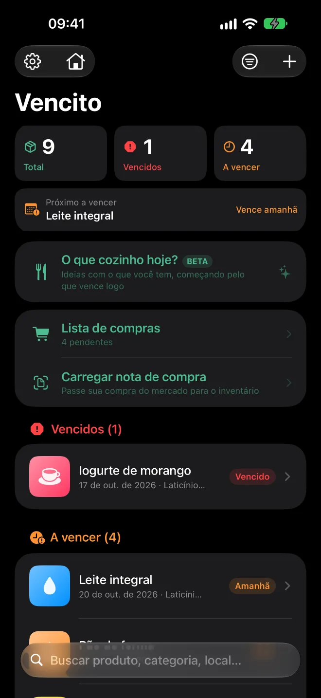
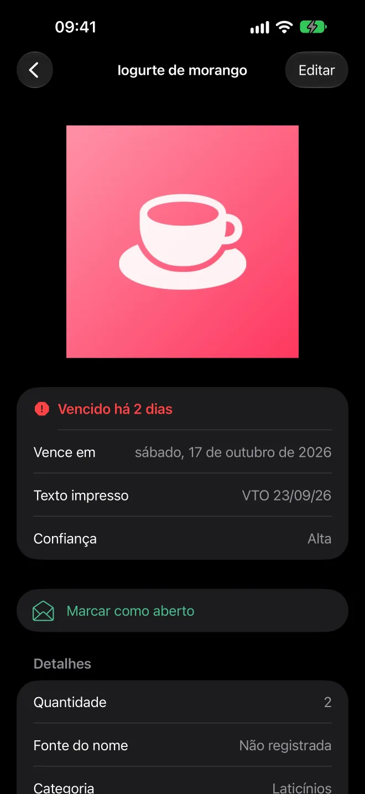
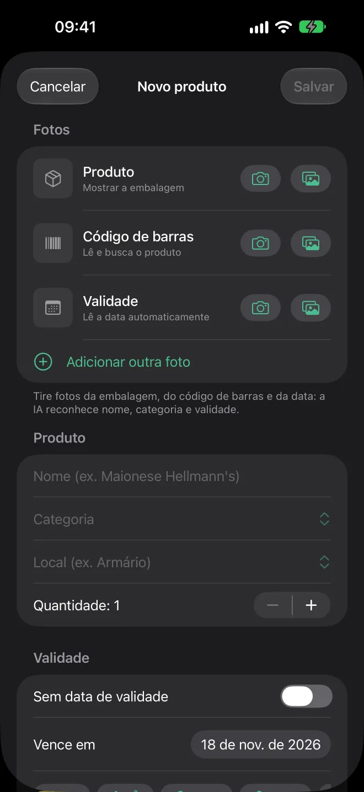
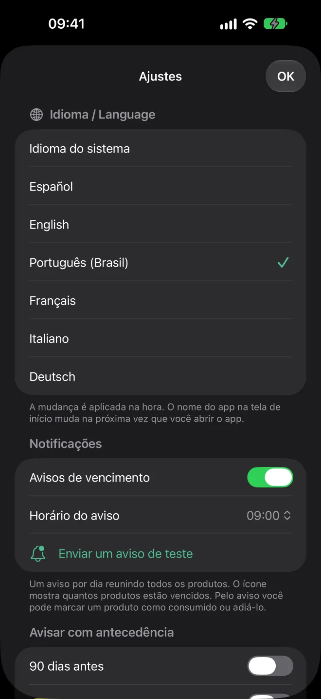
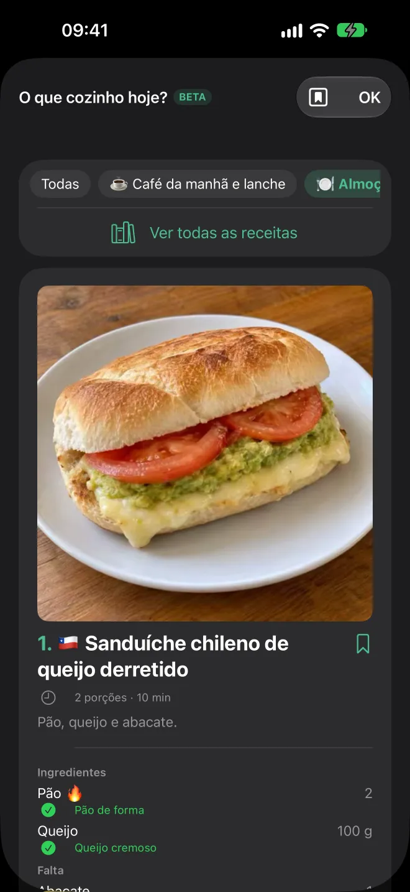
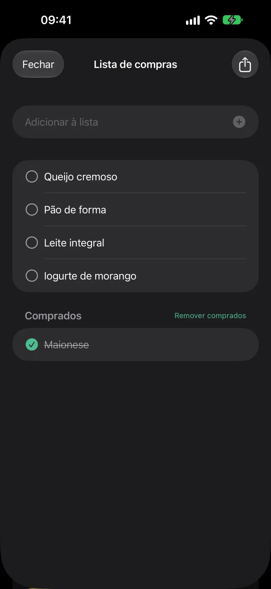
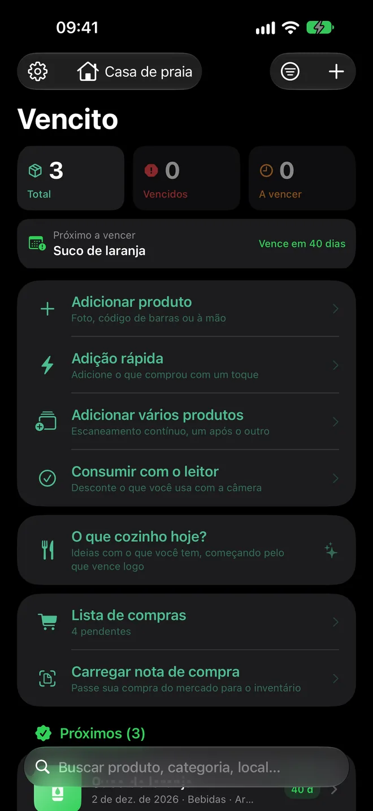
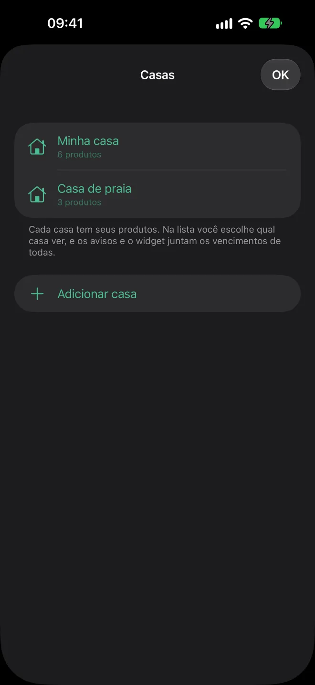
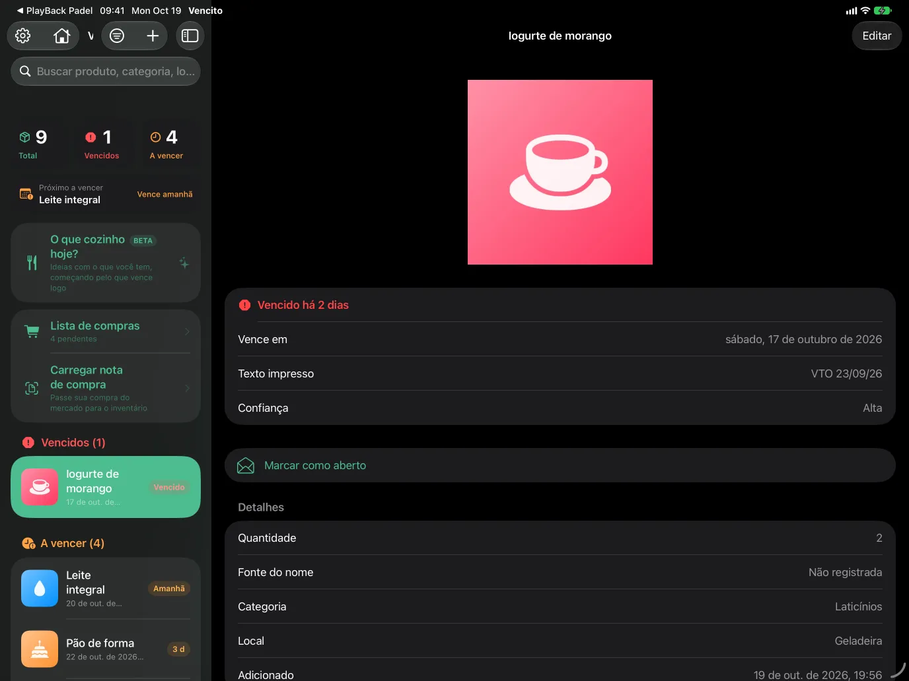

App para iPhone e iPad
Nada na sua despensa se perde.
Tire uma foto da embalagem e o Vencito lê a data de validade. Avisa antes de vencer e mostra o que usar primeiro.
Em breve na App Store e no Android · Grátis · iOS e iPadOS 17 ou superior

Como funciona
Da prateleira do mercado à sua geladeira, em três passos
Tire uma foto
Da embalagem, com a data à vista. Ou aponte a câmera ao vivo: ela lê o código de barras e a data ao mesmo tempo. Você pode adicionar mais fotos: do produto, do código de barras e da data de validade.
O Vencito completa o resto
Lê a data, sugere nome e categoria e busca o código de barras no Open Food Facts e nas suas bases de cosméticos e de outros produtos. Você confere e salva.
Receba o aviso a tempo
Uma notificação por dia, no horário que você escolher, com o que está para vencer: por padrão 30, 15, 7, 3 e 1 dia antes.
Teste aqui
Digite o que a embalagem diz
Esta é uma versão simplificada do leitor de datas do app. Ele entende os formatos impressos nas embalagens e prefere a data de validade à de fabricação.
Data de validade
—
—Recursos
Feito para a despensa, a geladeira e o armário de remédios
Leitor de datas
EXP 14/02/27, 25-08-2026, 25 AGO 2026, 08/2027, VAL 04/27… Distingue validade de fabricação e lê embalagens em seis idiomas.
Códigos de barras
Escaneamento ao vivo ou a partir da foto, com EAN, UPC e QR. O Open Food Facts (e suas bases de cosméticos e de outros produtos, como remédios isentos de prescrição) preenche nome, marca e categoria.
O que cozinhar hoje?
Receitas com o que você tem, começando pelo que vence logo. Catálogo próprio com mais de 1.000 pratos comuns e fáceis de vários países, com fotos e no seu idioma, para café da manhã, lanche, almoço e jantar, com modo de cozinha e receitas salvas. Funciona sem internet.
Várias casas
Guarde os produtos de mais de uma casa e escolha qual ver, ou veja todas juntas. Os avisos e o widget reúnem as validades de todas as casas.
Lista de compras
Anote o que precisa comprar, adicione com um toque o que falta numa receita ou deixe que ela inclua o que acabou. Marque o que comprou e compartilhe a lista como texto.
Vários em sequência
Escaneamento contínuo: código de barras, data e pronto. Se uma data não é lida com segurança, o app pede que você confirme antes de salvar.
Sem data de validade
Para o que não vence ou não tem data: fica guardado à parte, sem avisos.
Escaneamento ao vivo
Em um único quadro lê o código de barras, a data de validade e o nome do produto. Cada valor só é confirmado quando se repete, para evitar leituras borradas.
Várias fotos por produto
Guarde uma foto do produto, uma do código de barras, uma da data de validade e quantas quiser. Aparecem numa galeria que se desliza.
Widgets
Na Tela de Início e na Tela Bloqueada, com o que vence a seguir. Toque num produto para abri-lo no app.
Situação num relance
Vencidos, a vencer e próximos, com um resumo no topo e uma miniatura de cada produto.
Deslize para consumir
Um deslize tira uma unidade ou remove o produto. Errou? Sacuda para desfazer.
iPad
Lista e detalhe lado a lado, em qualquer orientação e com multitarefa. Com teclado, ⌘N adiciona um produto.
Seis idiomas
Espanhol, inglês, português (Brasil), francês, italiano e alemão. Troque na hora em Ajustes.
Acessível
Funciona com VoiceOver e tamanhos de texto grandes. Cada produto é lido por completo: nome, situação e data.
Vídeo
Vencito em 30 segundos
Tudo num relance, escaneamento ao vivo do código de barras e da data, e receitas com o que você tem.
O vídeo está em inglês. O escaneamento mostrado é uma simulação ilustrativa.
Receitas
Um olhar sobre o catálogo
Mais de 1.000 pratos comuns e fáceis de vários países, cada um com sua foto. Estes são alguns.

Bife à milanesa à napolitana
🇦🇷 · 40 min

Empanadas de carne assadas
🇦🇷 · 55 min

Chivito
🇺🇾 · 25 min

Chilaquiles vermelhos
🇲🇽 · 25 min

Lomo saltado
🇵🇪 · 25 min

Pabellón criollo
🇻🇪 · 50 min

Arepas com queijo
🇨🇴 · 25 min

Pastel de choclo
🇨🇱 · 60 min

Tortilla espanhola de batata
🇪🇸 · 35 min

Oyakodon
🇯🇵 · 25 min

Souvlaki de frango
🇬🇷 · 30 min

Chana masala
🇮🇳 · 30 min

Ropa vieja
🇨🇺 · 60 min

Sopa paraguaia
🇵🇾 · 50 min

Macarrão com queijo na panela
🇺🇸 · 30 min

Panquecas fofinhas
🇺🇸 · 20 min
As receitas são sugeridas com o que você tem e com o que vence primeiro.
Capturas de tela
Um olhar mais de perto








No iPad, lista e detalhe ficam lado a lado.
Privacidade
Seus dados ficam no seu iPhone
O Vencito não tem contas, nem servidores próprios, nem análises, nem anúncios.
Tudo no aparelho
Produtos, fotos e ajustes ficam guardados no seu iPhone ou iPad. Se você ativar a sincronização com o iCloud, também no seu iCloud privado (o desenvolvedor não tem acesso).
Lido no aparelho
O texto das fotos e os códigos de barras são lidos no aparelho com o reconhecimento da Apple.
Sai um único dado opcional
Para buscar um produto, apenas o número do código de barras é enviado ao Open Food Facts e às suas bases irmãs. Você pode desativar.
Avisos locais
As notificações são agendadas pelo próprio iPhone. Nunca passam por um servidor.
Perguntas frequentes
Dúvidas comuns
Quanto custa?
É grátis, sem nada bloqueado.
Funciona sem internet?
Sim. Só a busca do produto pelo código de barras precisa de internet.
Posso levar meus dados para outro celular?
Sim. Em Ajustes você exporta um arquivo com todos os seus produtos (com ou sem fotos) e o importa em outro aparelho.
E se a data mostrar só mês e ano?
O app usa o último dia desse mês, que é como as embalagens devem ser lidas. Entende tanto 08/2027 quanto VAL 04/27.
Posso guardar mais de uma foto por produto?
Sim. Além da foto principal, você pode adicionar uma do código de barras, uma da data de validade e até 8 mais. Deslize por elas na tela de detalhe; entram na exportação.
Outra dúvida ou algum problema? Fale com o suporte.